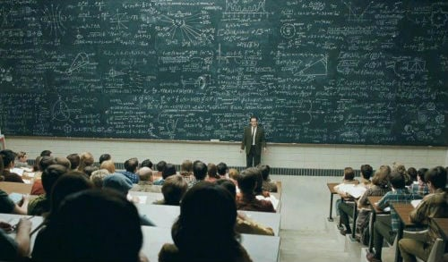

Gabriel Avanesian
AKA Gabe
Past
 I was born in Fairfax, Virginia and continued to live there for nine years. My time in Virginia was nice, as I got to enjoy the sun and snow while making my way through elementary school. I played trumpet for my school band along with soccer on the team. When 4th grade came around, my sister was born and we moved across the country to San Diego, where I’ve lived ever since. I started playing tennis while enjoying the new weather as I adjusted to the perpetual pleasantness. Eventually it came time to decide upon a high school, and due to its academic standing and strong community I decided to attend Canyon Crest Academy.
I was born in Fairfax, Virginia and continued to live there for nine years. My time in Virginia was nice, as I got to enjoy the sun and snow while making my way through elementary school. I played trumpet for my school band along with soccer on the team. When 4th grade came around, my sister was born and we moved across the country to San Diego, where I’ve lived ever since. I started playing tennis while enjoying the new weather as I adjusted to the perpetual pleasantness. Eventually it came time to decide upon a high school, and due to its academic standing and strong community I decided to attend Canyon Crest Academy.
Present
 As a high school student, I’ve been able to accomplish many things thanks to the opportunities provided. I’ve played on the school tennis team, a top ranked one in the state, and even got to be JV captain. I’ve also made countless friends with very intelligent people who share the same passion for STEM that I do. Among these people are those in the Astronomy club, with whom I’ve been able to conduct scientific research with. Besides that though, I’ve formed connections with so many people at my school and have thoroughly enjoyed my time here with them.
As a high school student, I’ve been able to accomplish many things thanks to the opportunities provided. I’ve played on the school tennis team, a top ranked one in the state, and even got to be JV captain. I’ve also made countless friends with very intelligent people who share the same passion for STEM that I do. Among these people are those in the Astronomy club, with whom I’ve been able to conduct scientific research with. Besides that though, I’ve formed connections with so many people at my school and have thoroughly enjoyed my time here with them.
Future
When I go to college, I want to study physics and astrophysics. It's a topic that's drawn me since middle school and I want to pursue it into a higher education any way I can. I want to go all the way up to graduate school and get a PhD in the field so that I can start doing research to advance it. By conducting research in a professional work setting, I can make real impacts on the world and help advance the ideas I care so much about. Beyond that I may even become a professor and teach other students, as by imparting my knowledge and what I've accomplished I may inspire others to do the same and push the boundaries of what's known.